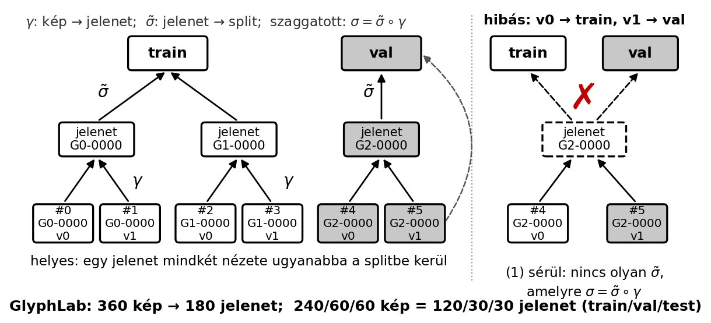

Ez az egység az adatfolyam legelső, a tenzorműveletek előtti szerződését tárgyalja: honnan jön a megfigyelés, milyen jogosultsággal használjuk, mi a független megfigyelési egység, és az annotáció mely rekordhoz tartozik. Az 5.4. Függő képek, seedek és resampling már megmutatta, hogy a függelék A. A GlyphLab adatkészlet szakaszában leírt GlyphLab 360 képéhez 180 jelenet tartozik, ezért a képszám és a független egységek száma eltér. A 11.4. Egy teljes PyTorch tanítási iteráció a PyTorch adatbetöltést a split után építette fel; most a splitet megelőző, ellenőrizhető réteget rögzítjük. A 8.4. II. ellenőrző pont: korrekt tanulási állítás korrekt tanulási állításához, a 21.4. Osztályarány, súlyozás és céleloszlás céleloszlásához és a 20.4. V. ellenőrző pont: indokolt CNN-választás adatfeltételes architektúradöntéséhez is ugyanaz a követelmény: az adathivatkozásnak egyértelműnek kell lennie a kísérlet teljes élettartama alatt.
Induló kérdés. A GlyphLab train halmaza 240 képet tartalmaz. Hány független statisztikai egység van ebben a halmazban: 240 vagy 120? Miért befolyásolja a válasz a validációs hibát? A becslését a csoportos felosztás lemmája és a labor auditja után ellenőrizheti.
A tárgyalt fogalmakat rekordok és leképezések nyelvén adjuk meg, mert a későbbi ellenőrzés ezeket a tulajdonságokat kódban is vizsgálja.
Leképezések. Egy függvény injektív, ha minden -re csak esetén teljesül; szürjektív, ha minden -ra van olyan , amelyre ; bijektív, ha injektív és szürjektív, azaz és elemei kölcsönösen egyértelműen megfeleltethetők.
Adateredet (provenance). Egy
példányból álló adathalmaz provenance-rekordja egy rendezett
lista, amely legalább az alábbiakat tartalmazza: a generáló vagy gyűjtő
folyamat azonosítója és verziója; a forrásra mutató azonosító; a
példányok és a csoportok generálásának paraméterei, köztük a véletlen
mag (seed); valamint a nyers állapotból a szállított állapotba vivő
transzformációk leírása. A GlyphLab esetében a generátor az
generate_data.py --output data parancs, a verzió 1.0, a
seed 20261020; a nyers szintetikus jelenetből két, zajjal módosított
nézet készül (view_id szerint). A provenance-rekord tehát
nem a modell hibájának minőségi leírása, hanem a reprodukálhatóság
szerződése.
Licenc. A licenc a felhasználási jogosultság jognyilatkozata egy meghatározott adatváltozatra. Megkülönböztetjük az adathalmaz nevét, az adatváltozat lenyomatát és a licencfeltételeket. A GlyphLab saját, oktatási célra előállított adata a könyv laborjának szerződése alá esik; a manifest verziója és SHA-256 lenyomatai azonosítják a változatot. Egy adathalmaz publikus elérhetősége nem jogi kategória, ezért a licencet konkrét URL-hez, verzióhoz és terjesztőhöz kötjük.
Duplikátum. Legyen
két példány, és
egy hashfüggvény a bájtábrázoláson. Azt mondjuk, hogy
és
tartalom-duplikátum, ha a bájtábrázolásuk azonos és
.
A gyakorlatban a bájtszintű összevetést hash-egyezéssel helyettesítjük:
szükséges, de ütközés esetén nem elégséges feltétel, ezért a
duplikátum-jelöltet bájtszintű összevetéssel kell megerősíteni. A
tartalom-duplikátum nem azonos a függő párral: a GlyphLab két
view-ja azonos jelenetből származik, ezért statisztikailag függő, de a
view-nként független zaj miatt a bájtábrázolásuk általában különbözik.
Azt, hogy egy duplikátum rekord-duplikátum-e, a deduplikációs
kulcs dönti el: a GlyphLab kulcsa az
(index, scene_id, view_id) hármas, amely garantáltan
egyedi, még akkor is, ha két view pixelszinten megegyezne.
Csoport (scene/patient/device group). Legyen
a példányindexek halmaza,
a csoportazonosítók halmaza, és
a csoporthozzárendelés. A GlyphLabben
a metadata.csv scene_id oszlopa, az
példányhoz
csoport. Minden
-re
a
halmaz elemei azonos független forrásból származnak; a köztük lévő
korreláció miatt a statisztikai egység a csoport, nem a kép. Orvosi
adatokban
jellemzően betegazonosító, többkamerás felvételeknél eszköz- vagy
felvételazonosító.
Annotáció és címke-hivatkozás. Legyen
az osztályok száma,
a címke. A GlyphLabben
,
a label oszlop int64 értéke. Az annotációs rekordok halmaza
,
ahol
a rekordok indexhalmaza; minden
sor egy
példányra hivatkozik. A címke-hivatkozás egyedisége azt
jelenti, hogy
injektív: két különböző annotációs sor nem hivatkozhat ugyanarra a
példányra. A GlyphLabben
,
és
bijekció, mert a metadata.csv index oszlopa az
egész
halmaz permutációja. Az annotáció a GlyphLabben a címkén túl a maszkot
és a fél-nyílt, nullától indexelt xyxy dobozt is tartalmazza:
xmin≤x<xmax, ymin≤y<ymax, a doboz
területe
.
Ebben a szakaszban megadjuk a csoportszintű diszjunkt felosztás reprezentációs invariánsát, és belátjuk a címke-hivatkozás egyediségének permutáció-invarianciáját.
Lemma (a csoportos split reprezentációja). Legyen véges halmaz, a csoporthozzárendelés, és tegyük fel, hogy , azaz szürjektív. Legyen továbbá . Ha minden esetén
akkor létezik pontosan egy úgy, hogy
Ha a csoportazonosítók halmaza nagyobb, mint (például a a lehetséges, de a mintában nem szereplő csoportokat is tartalmazza), akkor a csoportokhoz nem tartozik példány, ezért ezeken szabadon választható, és az egyértelműség csak a részhalmazon áll; a lemma kimondásakor ezért -t használunk.
Bizonyítás. A választás miatt szürjektív. Minden -hez válasszunk egy elemet, amelyre , és definiáljuk -t. Meg kell mutatnunk, hogy ez a definíció független a reprezentáns választásától. Ha egy másik választás, akkor ; az (1) feltétel szerint ezért . Tehát jól definiált. Továbbá minden -re
mert , ezért az (1) feltétel az és a párra közvetlenül -t adja. Ez éppen (2). Ha is eleget tesz (2)-nek, akkor minden -re , tehát a függvény egyértelmű.
A lemma következménye a diszjunkt felosztás invariánsa: a split nem a képek, hanem a csoportok partícióján értelmezett. Mivel a -ősképek diszjunkt uniója, az (1) tulajdonság pontosan azt mondja ki, hogy minden split halmaz teljes csoportok uniója. Ha a felosztás egyszer teljesíti (1)-et, akkor a rekordok tetszőleges permutációja után is teljesíti, mert a feltétel csak a értékpárokon múlik, nem a rekordok felsorolási sorrendjén. A GlyphLabben tehát a 120 train jelenet mindkét view-ja a trainbe, a 30 val jelenet mindkét view-ja a valba, a 30 test jelenet mindkét view-ja a testbe kerül; a képszám 240, de a független egységek száma 120. Ez válaszol az induló kérdés első felére. A másodikra: ha a két view különböző splitbe kerülne, a validációs halmaz olyan jeleneteket is tartalmazna, amelyeket a modell tanulás közben látott, ezért a validációs hiba optimistán torzított lenne; a 120 független egység miatt pedig a hiba bizonytalanságát is jelenetszintű bontásban kell becsülni, mert a 240 képből számolt képszintű intervallum a függő párok miatt túl szűk lenne.

G2-0000 két nézete
különböző splitbe kerül.Állítás (a címke-hivatkozás egyediségének permutáció-invarianciája). Legyen a példányok halmaza, a rekordok indexhalmaza, és a metadata-rekordok halmaza, ahol a rekordindex nem feltétlenül azonos a hivatkozott példányindexszel. Ha a hivatkozások páronként különbözőek, akkor a rekordok tetszőleges permutációja után is injektív marad a hivatkozás, és minden példányhoz legfeljebb egy rekord tartozik.
Bizonyítás. A rekordok átrendezését a rekordindexeken értelmezett permutáció írja le: az új -edik rekord az eredeti rekord, azaz . Ezzel a konvencióval az új hivatkozásfüggvény . (Az ellenkező irányú konvenció, , ugyanígy működik; a lényeg, hogy a rekordindexeket permutálja, a értékkészletét nem.) Mivel bijekció -n, a halmaz megegyezik a halmazzal, tehát értékkészlete azonos az eredeti értékkészletével. Mivel injektív, az értékkészletben nincs ismétlés, így is injektív; ebből következik, hogy minden példányhoz legfeljebb egy rekord tartozik. A bijektív eset külön indoklást igényel: ha és injektív -ről -re, akkor két azonos számosságú véges halmaz között szürjektív is, tehát bijektív; így minden példányhoz pontosan egy rekord tartozik. A rekordhoz tartozó címke, maszk és doboz a rekorddal együtt mozog, ezért ezekből is pontosan egy tartozik minden példányhoz. Ha , a bijektív következtetés nem érvényes, és csak a „legfeljebb egy” állítás marad meg.
A GlyphLab audit két strukturális invariánst ellenőriz: a csoportos
split (1) tulajdonságát, valamint azt, hogy a
metadata.index a
halmaz permutációja. Ezek mellett további ellenőrzéseket is végez: a
rekordkulcsok egyediségét, a SHA-256 lenyomatot, a címkék
értéktartományát, a dobozok érvényességét és a split-számokat. A SHA-256
a fájltartalom változatlanságát rögzíti, és így a provenance három
rétegét — folyamat, csoport, lenyomat — együtt zárja.
Tekintsünk hat képet három jelenetből, jelenetenként két view-val. Az
alábbi CSV-sorok a GlyphLab oszlopsémáját követik, de szemléltetők: az
indexek, a splitek és a dobozok a példa kedvéért választottak, nem a
valós adatkészlet sorai. (A valós lab/data/metadata.csv-ben
a vonalak 7–10 px hosszúak és 1–2 px vastagok, a két nézet doboza
azonos, például 0,G0-0000,0,0,train,8,9,9,18 és
240,G2-0000,0,2,train,5,8,15,17.)
index,scene_id,view_id,label,split,xmin,ymin,xmax,ymax
0,G0-0000,0,0,train,2,3,21,20
1,G0-0000,1,0,train,3,2,20,21
2,G1-0000,0,1,train,0,6,24,18
3,G1-0000,1,1,train,1,6,23,18
4,G2-0000,0,2,val,5,5,19,9
5,G2-0000,1,2,val,4,5,20,9Az (1) tulajdonság ellenőrzése: a G0-0000 csoport
mindkét elemének splitje train, a G1-0000
csoporté szintén train, a G2-0000 csoporté
val. Létezik tehát
,
,
és a lemma szerint a split a csoportokon értelmezett. Ha a 4. indexű
G2-0000,0 rekordot a val helyett
train-re írnánk át, akkor az (1) feltétel sérülne, mert az
5. indexű G2-0000,1 rekord val maradna; a
csoportos split lemmája miatt nem létezne olyan
,
amelyre
.
A címke-hivatkozás szempontjából a hat index érték egy
permutáció, tehát minden képtömbbeli pozícióhoz pontosan egy annotációs
sor tartozik. A két view nem tartalom-duplikátum: a pixeltenzoraik a
view-specifikus zaj miatt különböznek, rekordszinten pedig a
view_id is eltér. Ez a hat soros példa a labor teljes, 360
soros ellenőrzésének kicsinyített, kézzel követhető előképe.
Előfeltételek. Python 3.12, a lab/
csomag telepítve (cd lab && uv sync), NumPy 2.3.5
és pandas 2.3.3. A lock fájl (lab/uv.lock) ezeket a
verziókat telepíti; a fejezetben közölt mért kimenetek a könyv ellenőrző
környezetéből származnak (Python 3.12.3, NumPy 2.5.4, pandas 3.1.0,
torch 2.15.0+cpu). A két környezet a laborokban ugyanazt a kimenetet
adta; eltérés esetén az utolsó jegyek különbözhetnek (loss kb.
,
accuracy egy megfigyelési egységnyi). Szükséges fájlok:
data/manifest.json és data/metadata.csv;
futtatás: python audit_manifest.py --data data. Várható
futásidő CPU-n néhány másodperc, a tényleges időt a futás naplózza.
Az elvárt eredmény egy futtatható audit, amely a lab könyvtár
data/manifest.json és data/metadata.csv
fájljait ellenőrzi. Input: a rögzített GlyphLab adat az [ADATOK.md]
szerződése szerint. A példában nincs véletlen, tenzortanulás, GPU vagy
dtype-választás: CPU-s fájlműveletek, seed=None,
dtype nem értelmezett. Futtatási könyvtár
lab/, parancs:
python audit_manifest.py --data dataA GlyphLab képtenzorai
alakúak (a függelék A. szakasza), a maszk és a doboz ugyanezen a
-es
rácson él; a manifest arrays szakasza az alakot és a dtypét
is rögzíti.
A megírandó kód:
import argparse, hashlib, json, sys
from pathlib import Path
import numpy as np
import pandas as pd
# Input: GlyphLab data könyvtár; CPU fájlművelet, nincs véletlen.
def sha256_of(path: Path) -> str:
return hashlib.sha256(path.read_bytes()).hexdigest()
def check(data_dir: str) -> list[str]:
data = Path(data_dir)
errors: list[str] = []
manifest = json.loads((data / "manifest.json").read_text())
# A GlyphLab manifest sémája (lab/ADATOK.md): generator_version, seed,
# arrays, counts, sha256, corrupt_order.
for key in ["generator_version", "seed", "arrays", "counts", "sha256",
"corrupt_order"]:
if key not in manifest:
errors.append(f"hiányzik manifest kulcs: {key}")
for rel, sha in manifest.get("sha256", {}).items():
p = data / rel
if not p.exists():
errors.append(f"hiányzik adatfájl: {rel}")
elif sha != sha256_of(p):
errors.append(f"sha256 hibás: {rel}")
# a rögzített tömb-alak és dtype egyezzen a tényleges .npy fájlokkal
for name, spec in manifest.get("arrays", {}).items():
arr = np.load(data / name, mmap_mode="r")
if list(arr.shape) != list(spec["shape"]) or str(arr.dtype) != spec["dtype"]:
errors.append(f"tömb-alak vagy dtype eltérés: {name}")
meta = pd.read_csv(data / "metadata.csv")
n = len(meta)
# index: 0..N-1 permutáció (címkehivatkozás egyedisége)
if set(meta["index"]) != set(range(n)) or meta["index"].duplicated().any():
errors.append("index nem egyedi 0..N-1 permutáció")
if not meta["label"].isin({0, 1, 2}).all():
errors.append("label {0,1,2}-n kívüli érték")
if not set(meta["split"]) <= {"train", "val", "test"}:
errors.append(f"ismeretlen split érték: {sorted(set(meta['split']))}")
# csoportos split: scene -> split egyértelmű
bad = meta.groupby("scene_id")["split"].nunique()
bad = bad[bad != 1]
if not bad.empty:
errors.append(f"csoportos split sértve: {list(bad.index)}")
# megfigyelt darabszámok a manifesttel szemben
counts = {str(k): int(v) for k, v in meta["split"].value_counts().items()}
expected = {str(k): int(v) for k, v in manifest.get("counts", {}).items()}
if counts != expected:
errors.append(f"split-szám eltérés: {counts} != {expected}")
# doboz: fél-nyílt xyxy, 0<=min<max<=24, pozitív terület
box_ok = (
meta["xmin"].between(0, 24)
& meta["ymin"].between(0, 24)
& meta["xmax"].between(0, 24)
& meta["ymax"].between(0, 24)
& (meta["xmin"] < meta["xmax"])
& (meta["ymin"] < meta["ymax"])
)
if not box_ok.all():
errors.append("hibás doboz, nem fél-nyílt xyxy")
return errors
if __name__ == "__main__":
ap = argparse.ArgumentParser()
ap.add_argument("--data", default="data")
args = ap.parse_args()
errs = check(args.data)
for e in errs:
print("HIBA:", e)
if errs:
sys.exit(1)
print("OK: minden GlyphLab audit-ellenőrzés átment")A futtatás kimenete (Python 3.12.3, NumPy 2.5.4, pandas 3.1.0, CPU, a
rögzített lab/data könyvtáron):
$ python audit_manifest.py --data data
OK: minden GlyphLab audit-ellenőrzés átment
$ echo $?
0A parancs sikeres kilépési kódja 0, és a kimenet egyetlen OK-sort
tartalmaz; hibás adat esetén a HIBA: sorok listázzák az
eltéréseket, a kilépési kód pedig 1.
Ha egy jövőbeli generátorverzió megváltoztatja a manifest JSON-kulcssémáját, az audit első feladata a séma feloldása; a hibajelzés ekkor pontosan megnevezi a hiányzó kulcsot.
A feladat második fele egy terv, nem egy elvégzett letöltés. A következő sablont bármely választott külső adatra kitöltheti:
Választható minta: ha a hallgató a CIFAR-10 nevű adatkészletet választja, a protokoll 2. és 3. pontjába a ténylegesen beszerzett tükör URL-jét, SHA-256-ját és licencnyilatkozatát kell beírni. A CIFAR-10 letöltése és licencének ellenőrzése a hallgató feladata; a „CIFAR-10 publikus” kijelentés önmagában nem protokoll.
Gyakori hiba így hangzik: „Az X adathalmaz publikus, tehát a
felhasználásom jogszerű, és a neve azonosítja az adatokat.” A két
állítás egyike sem következik a névből. Legyen
és
két archívum, mindkettő GlyphAlike-v1.zip néven terjesztve
(a név fiktív, csak a példát szolgálja);
SHA-256 lenyomata
,
licencfeltétele CC BY 4.0,
lenyomata
,
feltétele pedig „csak nem kereskedelmi kutatásra”. A „GlyphAlike
szabadon használható” mondat
-re
igaz lehet, de
-re
hamis, pedig a név azonos. A hibás érvelés következménye kettős: a
kísérlet nem reprodukálható, mert a lenyomat nélkül nem tudjuk, melyik
változatot használtuk, és a licencfeltétel dokumentálása nélkül a
felhasználás jogszerűsége nem ellenőrizhető; a licenc megsértésének jogi
következményeit a licenc szövege és az alkalmazandó jog szabályozza, ezt
a könyv nem minősíti. A javítás a név, a lenyomat és a licencfeltétel
hármasának rögzítése: a három adat együtt, konkrét URL-lel és
hozzáférési dátummal.
Az F5 kísérlettervezési feladat kötelező sablonja. A válaszban adja meg a hipotézist; a független és a függő változót; a kontrollt vagy baseline-t; a modellarchitektúrát, az optimalizálót, a tanulási rátát és az epochszámot; a seedek számát és konkrét értékét; a metrikát és a megfigyelési egységet; az előre rögzített, számmal megfogalmazott döntési szabályt és a statisztikai próbát; valamint az erőforráskeretet. Ha a feladat nem tanít modellt, a tanítási recept helyett az adott eljárás kontrollját, döntési szabályát és erőforrását kell kitölteni.
F1 (fogalmi, nehézség 1). Magyarázza el a
különbséget a tartalom-duplikátum és a függő nézetpár között a
GlyphLabben. Adjon olyan kis ellenpéldát, amelyben két kép azonos
címkéjű és azonos pixelértékű, mégsem kezelhető ugyanannak a rekordnak,
mert a rekordkulcs (index, scene_id, view_id) különbözik.
Várt eredmény: definíciók és a kézi példa sémájában megadott
ellenpélda.
F2 (levezetési, nehézség 2). Adott , , , . Legyen , , . Mutassa meg, hogy nem létezik , amelyre , és azonosítsa a lemma (1) feltételének sérülését. Várt eredmény: rövid indoklás a jól definiáltság meghiúsulásával.
F3 (implementációs, nehézség 2). Írjon
check_group_split(meta) függvényt, amely egy
index,scene_id,split oszlopokat tartalmazó pandas
DataFrame-re visszaadja azon scene_id értékek listáját,
amelyek egynél több splitbe esnek, és tesztelje a kézi példa hat során,
valamint egy hibás változaton. Várt eredmény: a függvény kódja, a két
hívás és a visszaadott értékek.
F4 (hibakeresési, nehézség 2). A következő kódrészlet képszintű indexeket sorsol, majd a kapott indexeket nevezi csoportos splitnek:
order = np.random.permutation(np.unique(meta["index"]))Mi a hiba, mi a következménye a GlyphLabben, és hogyan javítjuk úgy, hogy a scene legyen a sorsolási egység? Várt eredmény: a hiba lokalizálása, a következmény a két view szétválására, és a javított sorsolási sor, valamint a visszaellenőrzés módja.
F5 (kísérleti/transzfer, nehézség 3). Válasszon egy tetszőleges külső képadatkészletet, és töltse ki a labor külsőadat-protokolljának tízlépéses sablonját. Adja meg a megfigyelési egységet, a licencvizsgálat tervét, a duplikátum- és annotáció-ellenőrzést, valamint a split utáni auditparancsot. Várt eredmény: a teljes terv szövege, nem letöltött adat; a letöltés hiánya kifejezetten jelölendő. Értékelési szempont: mind a tíz pont kitöltve; a letöltés hiánya és az adatkártya tényleges ellenőrzésének szándéka jelölve; a licenc, a duplikátumkezelés és a csoportos split konkrét lépésekkel szerepel; a split utáni auditparancs megnevezett.
F1. A tartalom-duplikátum kritériuma a bájtábrázolás
azonossága azonos felbontású, csatornaszámú tenzorokra; a
hash-egyezés ezt közelíti, de ütközés esetén téves pozitív lehet. A
függő pár akkor áll fenn, ha
ugyanazon jelenethez, beteghez vagy felvételhez tartozik: a két GlyphLab
view közös geometriai előfutárból származik, de a view-specifikus zaj
miatt eltérő pixelsorokat kap, tehát általában nem tartalom-duplikátum.
Az ellenpélda: legyen a generátor egy olyan futtatása, amelyben mindkét
view-ra nulla zaj jut; ekkor a pixelsorok azonosak, és a két view
címkéje is azonos, hiszen ugyanahhoz a jelenethez tartoznak, tehát
ugyanazt az orientációt hordozzák. Az
(index, scene_id, view_id) rekordkulcs azonban különbözik,
ezért a rekord-duplikátum nem áll fenn, és a két képet nem lehet
egyetlen rekordként kezelni. Az azonos címke tehát nem elégséges
feltétel a rekordazonossághoz; a rekordidentitást a rekordkulcs
hordozza. A megkülönböztetés gyakorlati következménye: a duplikátum
eltávolításakor a content hash törölheti a függő párokat, ha a
rekordkulcs nincs bevonva.
F2. Tegyük fel, hogy létezik . Ekkor , de , tehát egyszerre két különböző érték, ami ellentmondás. Az (1) feltétel sérülése: , de . A jól definiáltság bizonyításának az a lépése hiúsul meg, amely a reprezentáns függetlenségét használja; az csoportnak nincs egyetlen splitértéke.
F3. Lehetséges megoldás:
import pandas as pd
def check_group_split(meta: pd.DataFrame) -> list:
# meta oszlopai: index, scene_id, split
nsplit = meta.groupby("scene_id")["split"].nunique()
return list(nsplit[nsplit != 1].index)
# a kézi példa hat soros, helyes változata
good = pd.DataFrame({
"index": [0,1,2,3,4,5],
"scene_id": ["G0-0000","G0-0000","G1-0000","G1-0000","G2-0000","G2-0000"],
"split": ["train","train","train","train","val","val"],
})
print(check_group_split(good)) # []
# hibás: a G2-0000 egyik view-ja train lett
bad = good.copy()
bad.loc[5, "split"] = "train"
print(check_group_split(bad)) # ['G2-0000']A visszaadott üres lista a csoportos tulajdonság teljesülését
jelenti; a hibás példában a G2-0000 azonosítja a sértő
csoportot.
F4. A hiba: a kód a meta["index"]
egyedi értékeit sorsolja, nem a meta["scene_id"] egyedi
értékeit. A sorsolás maga nem tesz csoportos splitet; az eredmény
véletlenül sem garantálja, hogy az azonos scene_id-hez
tartozó view-k azonos splitbe kerülnek. A GlyphLabben ez azt jelenti,
hogy ugyanannak a jelenetnek az egyik view-ja a train, a másik a val
halmazba kerülhet, így a validációs hibát a trainben látott jelenet
torzítja, és a független egységek száma helytelenül a képszám lesz.
Javítás: a jelenetazonosítókat sorsoljuk, majd az eredeti indexeket a
sorsolt scene_id-k alapján válogassuk:
import numpy as np
scenes = np.unique(meta["scene_id"])
rng = np.random.default_rng(20261020)
perm = rng.permutation(scenes)
val_scenes = set(perm[:30])
test_scenes = set(perm[30:60])
train_scenes = set(perm[60:])
assert len(val_scenes) == len(test_scenes) == 30
assert len(train_scenes) == len(scenes) - 60
# A képindexet a saját index oszlop adja, nem a pandas sorszám.
is_val = meta["scene_id"].isin(val_scenes)
is_test = meta["scene_id"].isin(test_scenes)
train_idx = meta.loc[~is_val & ~is_test, "index"].to_numpy()
val_idx = meta.loc[is_val, "index"].to_numpy()
test_idx = meta.loc[is_test, "index"].to_numpy()
# visszaellenőrzés: a három képindex-halmaz diszjunkt és lefedő
assert set(train_idx).isdisjoint(val_idx)
assert set(train_idx).isdisjoint(test_idx)
assert set(val_idx).isdisjoint(test_idx)
assert len(train_idx) + len(val_idx) + len(test_idx) == len(meta)
# a döntés jelenetszintű: minden jelenet pontosan egy új splitbe esik
new_split = meta["scene_id"].map(
{**{s: "val" for s in val_scenes}, **{s: "test" for s in test_scenes},
**{s: "train" for s in train_scenes}})
assert new_split.notna().all()
assert check_group_split(meta.assign(split=new_split)) == []A visszaellenőrzés után minden jelenet egy splitbe esik; a képindexek
szétválasztása már a csoportos döntést követi. A három részhalmaz
120/30/30 jelenetet ad, ami megegyezik a canonical GlyphLab split
arányával, de nem feltétlenül ugyanazokkal a jelenetekkel; a
gyakorlatban a metadata.csv split oszlopát
kell használni, ez a kód csak a csoportos sorsolás mechanizmusát
mutatja. A seed a könyv 20261020-as értéke, és a
default_rng lokális generátort használ a globális
np.random.seed helyett.
F5. Megoldásminta a CIFAR-10 választásához. A terv
első pontja: képek osztályozása tíz osztályba; a bemenet alakját
(
tenzor) és az osztályszámot a választott tükör adatkártyáján kell
ellenőrizni, ez a leírás nem helyettesíti az adatkártyát. A 2. és 3.
pont kitöltetlen mezői a minta jellegét mutatják:
[tükör URL: ______],
[hozzáférés dátuma: ______],
[archívum SHA-256: ______],
[licencszöveg és licencverzió: ______]; ezeket a
hallgatónak a tényleges beszerzés után kell kitöltenie. A megfigyelési
egység: a kép, feltéve, hogy az adatkártya nem közöl olyan
csoportosítást, amely egy forrásból több képet rögzít; ezt az adatkártya
tényleges olvasása után kell megerősíteni. Duplikátum-ellenőrzés: a
teljes archívum SHA-256-ja az archívum szintjén pontos azonosságot
jelez; a kibontott képfájloknál a bájtszintű összehasonlítás a pontos
tartalom-duplikátumot, a perceptual hash (például pHash) pedig a
közel-duplikátumot keresi. A két fogalmat külön kell jelenteni: a
perceptual hash egyezése nem definíció szerinti tartalom-duplikátum,
hanem közel-azonos kép. Annotáció: az osztálycímkét a terjesztő
leképezése szerint kell kezelni, és a 0–9 tartományt az adatkártyán
ellenőrizni. Split: a csoportos tulajdonságot a képazonosító szintjén
ellenőrizzük, és a kiválasztott splitet a fenti
check_group_split-hez hasonló függvénnyel zárjuk. A közölt
korlát: a kapott modellhiba a választott tüköradatra vonatkozik, nem a
„CIFAR-10” név által jelölt bármely másolat univerzumára.
Változó és metrika: a változó tényező a vizsgált tükör; a metrika az auditált eltérések száma (hiányzó kulcs, duplikátumcsoport, split-átfedés), a megfigyelési egység egy adathalmaz-rekord. Hipotézis, kontroll, döntési szabály és erőforrás: a hipotézis, hogy a kiválasztott tükör a tízlépéses protokollal reprodukálható módon használható, ha a licenc a kutatási felhasználást engedi, az archívum SHA-256-ja rögzíthető, és a csoportos split a duplikátumok kiszűrése után sértetlen. Kontroll: a letöltés nélküli terv, amelyben minden ellenőrzés az adatkártya és a közzétett metaadat ellenőrzése; a minta nem állítja, hogy az adat letölthető vagy hogy a licenc engedi. Előre rögzített döntési szabály: a tükör csak akkor fogadható el, ha a licenc a kutatási felhasználást kifejezetten engedi, az archívum SHA-256-ja dokumentált, és a pHash-tal talált közel-duplikátumok mindegyike egy csoportba és egy splitbe kerül; ha bármelyik feltétel nem teljesül, a tükör elutasítandó. A döntéshez legalább 100 véletlen képből álló ellenőrző minta kell, amelyet seed -szal húzunk. A feladat nem tanít modellt, ezért architektúra és optimalizáló helyett a tükör kontrollja és a döntési szabály szerepel. Erőforrás: a feladat szándéka szerint nincs letöltés; a terv és az adatkártya-ellenőrzés CPU-n, néhány óra dokumentációs munka.
Önellenőrzés: (1) A csoportos split tulajdonság a rekordok permutációjától független? Igen, mert (1) csak indexpárokra tett feltétel. (2) A SHA-256 egyezés önmagában bizonyítja a jogosultságot? Nem, csak a változat azonosságát; a licenc külön rekord. (3) Két pixelszinten azonos view duplikátum-e? Tartalom szerint igen, rekordszinten nem, ha a rekordkulcs különbözik.
Korábbi fogalmak: az 5.4. Függő képek, seedek és
resampling csoportos splitje itt a lemmában kap reprezentációs
alakot: a
felírás pontosan azt rögzíti, hogy a split a jeleneteken definiált. A 10.1. Számítási gráf és lokális derivált számítási
gráfjában egy közös paraméterhez több ág hozzájárulása összegződik; itt
az adatoldalon egy közös scene_id-hez több rekord tartozik,
és a split-döntést a közös kulcs szintjén kell meghozni. A közös vonás
tehát nem a gradiens-összegzés iránya, hanem az, hogy a döntést a közös
kulcs (ott a paraméter, itt a scene_id) szintjén hozzuk
meg. A hivatkozás integritását két irányban ellenőrizzük: minden rekord
pontosan egy példányra hivatkozik
(
injektív), és minden példányhoz legfeljebb egy rekord tartozik; a
rekordazonosságot az (index, scene_id, view_id) kulcs
hordozza. A 21.1. Inicializálás és
varianciaterjedés inicializálási seedje a provenance-rekordban tér
vissza: a generátor seedje nélkül a manifest csak statisztika, nem
reprodukálható szerződés. Végül a 18.1. Reziduális
blokk és identitásút identitásútja a bemenetet változatlanul viszi
át a blokkon; hasonlóan az index mező viszi változatlanul a
rekord és a képtömb sora közötti kapcsolatot a splitelésen és a
permutációkon át.
Az adat használatának első szerződése a provenance, a licenc és a megfigyelési egység hármasa. A provenance a generáló folyamatot, seedet és lenyomatot rögzíti; a licenc a konkrét változathoz tartozó jogosultság, nem a név következménye; a duplikátum tartalom- és rekordszinten más fogalom, mint a függő nézetpár. A GlyphLabben a statisztikai egység a jelenet, ezért a split a 180 jelenet partíciója, nem a 360 képé. A lemmában belátott reprezentáció és a címke-hivatkozás injektivitása a split- és annotáció-ellenőrzés két strukturális invariánsa. A labor a manifestet és a metadata-t ezen invariánsok mentén auditálja. A nyitó kérdésre a válasz: a 240 train kép 120 független jelenetből származik, ezért a statisztikai egységek száma 120, nem 240.
A 22.2. Címkemegőrző transzformációk a címkemegőrző transzformációkat vizsgálja: ott az itt rögzített hivatkozás-egyediségre építve azt kérdezzük, mely kép- és annotációtranszformációk őrzik meg a címkét. A függelék A. szakasza szerint a GlyphLab címkéje a vonal orientációja (0 = vertical, 1 = horizontal, 2 = diagonal), és a generátor a diagonal osztályban csak az egyik ferde irányt állítja elő; ezért a 90°-os forgatás a vertical és horizontal címkét felcseréli, a diagonálist pedig a nem generált másik ferde irányba viszi, azaz nem címkemegőrző.
data/manifest.json,
data/metadata.csv, a könyv ADATOK.md szerződése
szerint.